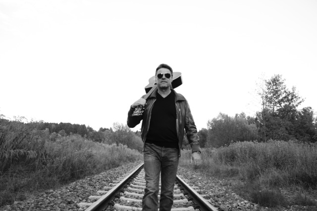

Norbert Stemmer | WDD 130
Hi, I am Norbert In 2016 I started to write songs and now I am ready to publish them. Some of my songs are about romance and love of course. Titles like - “How beautiful you are”, “Temptations”, “All my dreams came true” “Toren Heart”, and more but I also write songs about topics that are of deeper thoughts, like - “Inshalla” -a song about how much of a burden sorrow can be. We take sorrow into the night and when we wake up in the morning they are still there. - “Hearts of stone” is a song about refugees dying on their run from poverty and war in Africa - “In despair” – Is a song about depression – many people have depressions and I have experienced it myself – so this song is about it and how to overcome. - So many people have been dying in terror attacks or shootings in the past – My song “I hear of people dying” is in honor of the victims and their families and friends. Also, I wrote some spiritual songs like - “My prayer”, “Who am I”, and a Xmas-Song called “Christmas is all about Jesus” There are more songs, but the ones I just mentioned are the ones I am presently recording and about to publish now from week to week - Hopefully 1 Song per week. I will introduce each song before I publish it, so you know what it is all about and why I wrote it. Dear Patron, I hope you will like the songs and support me on my further route. I am a seasoned man, but new to the music world and hope to get funded enough so I can make it. Thank you for your support. So, stay with me - you will get some very exciting songs to hear, I promise - .